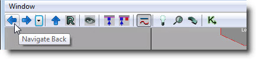
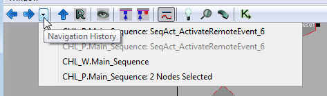
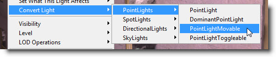
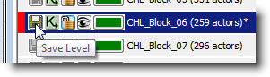
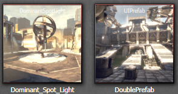
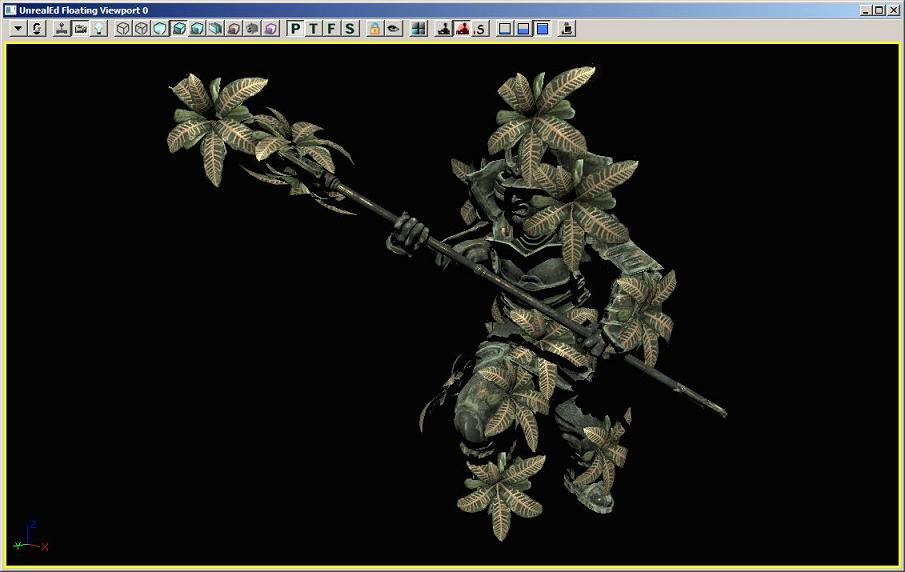
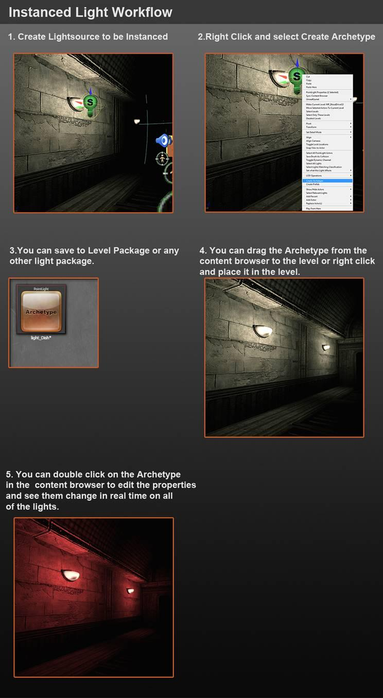

UDN
Search public documentation:
ContentBlogJP
English Translation
中国翻译
한국어
Interested in the Unreal Engine?
Visit the Unreal Technology site.
Looking for jobs and company info?
Check out the Epic games site.
Questions about support via UDN?
Contact the UDN Staff
中国翻译
한국어
Interested in the Unreal Engine?
Visit the Unreal Technology site.
Looking for jobs and company info?
Check out the Epic games site.
Questions about support via UDN?
Contact the UDN Staff
Unreal Engineコンテンツ作成ブログ
概略
このブログのようなページは、古くなってもアップデートの心配をせず、使える情報を簡単で便利な方法で皆さんと共有しようとする試みのものです。 通常のドキュメンテーションと違いブログは期限切れということがなく、唯一の心配といえばブログの中止ということだけです。 今後ブログを自社のヒントやコツを共有できる主な手段とし、または電子メールをコンテンツ作成の代替にすることによって、ブログの長所を十分に利用していきたいと考えております。 長期間に渡ってライセンシーを含め全ての方がこのブログに協力してくださり、私どものドキュメンテーションの向上と、この方法での知識の共有を支援してくだされば幸いです。 なぜブログ？ 主要目的は、有益な情報共有に必要な労力を減らし、大勢の人々とのアップデート共有を簡単にするためです。 最新の形式ではアップデート労力はとても少なく、新たに加えられた機能や新しく得た知識あるいは一般的なヒントやコツについての迅速なお知らせを可能にしています。 何を掲載？ 皆さまに役立つ情報を掲載してまいります。 最適化をしたが、うまくいきませんでしたか？なぜうまく機能しなかったかという詳細をお知らせください。同様な問題が必ず他の方の役に立ちます。 役立つプラグインやツールを発見なさいましたか？是非投稿してください。パイプラインのインポートを迅速化する素晴らしい方法をご存知でしたら投稿ください！ なぜ厳密なブログではないのでしょうか？軌道に乗せるため問題を克服する方法を探しましたが、大部分が技術的な制限のためです。 計画ではこのページに定期的に手を加え、ここにある全てのヒントやコツを既存のドキュメンテーションに確実に反映させていく予定です。ブログエントリー
最近の掲載記事...
- 最近のエントリ
- 2010年3月
- 最適化された法線の処理
- アセットの統合
- ビデオのエンコード
- 動的シャドウが付与される半透明マテリアル
- 未ビルドライトのプレビューに関する変更
- カスケードシャドウマップとDominantDirectionalLightMovable
- パッケージリストフィルタ
- ドラッグアンドドロップの変更
- マテリアルエディタノードのプレビュー
- プロパティ ウィンドウ スクリプトで定義された順序
- アセット参照のコピー/ペースト
- MipGenSettings
- SkeletalMeshCinematicActor
- Attachment Editor (アタッチメントエディタ)
- "Set VectorParam (ベクトル パラメータの設定)" と "Get Location and Rotation (場所と回転の取得)" アクションの新しい Kismet の機能
- プロパティ ウィンドウお気に入り
- ステータスバー通知
- 新しいカラーピッカー
- ドラッグアンドドロップ Matinee コネクター (2009 年 12 月 17 日)
- アニメーション関連ドキュメントの更新完了(2009 年 12 月 8 日)
- AnimSet ビューア - モーフターゲットキー(2009 年 12 月 7 日)
- 新しいビデオ チュートリアル(2009 年 11 月 30 日)
- 新しいジオメトリモード テクスチャ (2009 年 11 月 30 日)
- 新しいエディタ機能 (2009 月 11 月)
- テクスチャ写真の品質向上
- World Position Offset (別名: 頂点変形)
- 照明のビルド情報ダイアログ
- 新しい表示モード
- ビューポートのパンニング動作の変更
- メッシュのペイントツール
- シェーダーの複雑度の改良
- カスタムサムネイル
- 新しい "ピボット" コントロール
- デフォルト設定の変更
- 高度なメッシュ配置
- Content ブラウザのライトアクタ
- Translucent Primitive の基本アーキタイプ
- インスタンス化されたライトのワークフロー
- エディタのパフォーマンス
- ライトマップ UV のパディング
- ようこそUnreal Engineコンテンツブログへ
最近のエントリ
ブログエントリ
深度依存型ハロー
投稿日：2010/04/14 投稿者：Jason Bestimt (関連トピック：UnrealEdJP) 遠近法ビューポイントが深度依存型ハローに対応しました。これによって、ワイヤーフレームがいっそう読み取りやすくなりました。この機能はデフォルトでイネーブル(有効)となっています。この機能は、View->Preferences->Enable Wireframe Halosのメインエディタビューポイントで切り替えることができます。ProcBuilding?のドキュメント
投稿日：2010/04/2 投稿者：James Golding ProcBuilding?システムおよびFacadeツールに関するドキュメントが、UDNhereで利用可能になりました。2010年3月
最適化された法線の処理
投稿日：2010/03/26 投稿者：Kevin Johnstone より最適化されたポリカウントについて、さらにきれいに法線を処理するには、エンジンが行っていることを模倣し、従来なら別個のスムージンググループに配置するような面や、面取りをした端や付加的エッジループの追加によって面を除去してきれいにしますが、これにはいくつか異なる方法があります。アセットの統合
投稿日：2010/03/23 投稿者：Jason Bestimt アセット統合ツールによって、エディタ内で簡単に複数のアセットを1つのアセットに統合することができます。たとえば、テクスチャについて考えてみます。開発期間を通じて何回となく複製され、同一テクスチャの複数のコピーを保存することによってリソースを浪費する場合があります。アセット統合ツールでは、このように使用されたすべてのテクスチャを任意に選択することができ、さらにその選択項目すべてが、そのテクスチャの特定の1つのインスタンスをポイントするようにできます。アセット統合ツールの起動
このツールにアクセスするには、単に統合したいアセット(複数)をコンテクストブラウザ上で選択します。その際は、統合先のアセットも含めます。次に、右クリックして表示されるコンテクストメニューの中からConsolidate…(統合…)を選択します。この統合機能では、同じ種類のオブジェクトのみを選択できます(テクスチャやマテリアルによっては例外もある)。Consolidate…(統合…)を選択できない場合は、同じ種類のアセットのみが選択されていることを確認してください。| |
| ここでは、1つのテクスチャが何回も複製されています。それらを すべて選択して右クリックすると、Consolidate…(統合…)オプションが表示されます。 |
アセットを統合する
選択したオブジェクトのコンテクストメニューからConsolidate…(統合…)を選択するとダイアログが開き、選択したすべてのアセットのラジオボタンリストが表示されます。「統合先アセット」にするアセットをダイアログから1つ選択し、Consolidate Assets(アセットの統合)をクリックします。リストから選択しなかったアセットへの参照はすべて、選択したアセットへの参照に置き換えられます。同時に、選択しなかったアセットはこの過程で消去されます。| |
| 統合ダイアログの中で、アセットを1つ選ぶと「統合先オブジェクト」 になります。 |
| |
| すべての複製が選択されたアセットに統合されました。 |
ビデオのエンコード
投稿日：2010/03/23 投稿者：Nick Atamas ゲームや特定の機能をデモンストレーションするためにビデオを作製しなければならない場合がしばしばあります。 ただし、キャプチャされたビデオはサイズが大きくなりがちです。 幸いなことに、ギガバイト級のビデオはたいてい数十メガバイト程度まで圧縮できます。 簡単に圧縮するには、フリー版のMicrosoft Expression Encoderを使用します。 Video tutorial:- インストール
- 次のサイトの右側にあるDownload Free Versionをクリックします。http://www.microsoft.com/expression/try-it/default.aspx?filter=encoder3
- インストーラを起動します。
- Expression Encoderを起動します。エンコーダの中に、キャプチャしたビデオをドラッグドロップします。
- Output -> Job Outputにあるoutput directory(出力ディレクトリ)を選択します。
- Encode -> Videoにあるquality(質)を選択します。2048 kbpsが適切な偶数値です。
- *Frame Rate*(フレームレート)と*Size Mode*(サイズモード)の両方が*Source*に設定されていることを確認してください。
- Encode(エンコード)をクリックし、待ちます。
動的シャドウが付与される半透明マテリアル
投稿日：2010/03/22 投稿者：Daniel Wright 特定の2つの状況で、動的にシャドウされた半透明性が機能するようになりました。 1) ライト環境によってリットされる半透明マテリアルは、静的環境から放たれるドミナントライトによって、動的シャドウを得るようになりました。 言い換えると、キャラクターの髪が、環境からシャドウを受けることができるようになりました。 左側の半透明な髪はこの機能を使用していません。右側の髪はこの機能が有効になっています。未ビルドライトのプレビューに関する変更
投稿日：2010/03/18 投稿者：Daniel Wright 以前エディタでは、未ビルドライトがあるオブジェクトについてはシャドウボリュームが使用されていましたが、シャドウは、パフォーマンス上の問題やBSOD(ブルースクリーン)を回避する寸前にポップインしただけでした。次のQAビルドでは、投影されたシャドウは以下の状況で使用されることになります。 1) 未ビルドのオブジェクトがごく少数の場合(オブジェクトを移動させたり設定を変更する場合に発生)。オブジェクト単位のシャドウは、ドミナントライトから作られます。オブジェクトに影響を与えるライトはいくつも存在する場合が考えられ、その場合、オブジェクト単位のシャドウが多数作られることによってエディタがすぐに使用できなくなるため、これらのシャドウはドミナントライトからのみ作られます。 2) 未ビルドのオブジェクトが多数ある場合、またはライトが未ビルドの場合(ライトを移動させたり編集したりする場合に発生)。シーン全体のシャドウはライトに対して生成されます。これは現在、ドミナントの指向性ライトおよびあらゆる種類のスポットライトでのみ機能します。 その例として、次に、ドミナントの指向性ライトをもつ、ビルドされたシーンを掲載します。カスケードシャドウマップとDominantDirectionalLightMovable
投稿日：2010/03/18 投稿者：Daniel Wright ドミナントの指向性ライトが、カスケードシャドウマップに対応しました。以下は、それに関係する設定です。 $ *WholeSceneDynamicShadowRadius*：動的シャドウがフェードアウトする距離を決定します。 $ *NumWholeSceneDynamicShadowCascades*：ビューフラスタムをいくつのパーツに分解するか決めます(カスケードと呼ばれる)。カスケードにはそれぞれ、専用のシャドウマップがあります。カスケードの数を増やすことによって、シャドウの解像度を上げることができます。また、より大きなビューレンジが可能になりますが、レンダリングする時間が長くなります。 $ *CascadeDistributionExponent*：高い値に設定すると、カスケードの移行がよりカメラに近づきます。値が1未満になると移行は離れていきます。 大きなビューレンジには、以下の値が適切です。-
WholeSceneDynamicShadowRadius= 10000 -
NumWholeSceneDynamicShadowCascades= 3 -
CascadeDistributionExponent= 3
パッケージリストフィルタ
投稿日：2010/03/18 投稿者：Nick Atamas 作業中のパッケージの情報に関して把握しておくには、Content Browser JPで提供されるようになったいくつかのツールが役に立ちます。 テキストフィルタの他にも、_修整_したパッケージや、現在_チェックアウト_しているパッケージを表示することができます。ドラッグアンドドロップの変更
投稿日：2010/03/17 投稿者：Nick Atamas 変更内容 以前は、アセットをドロップする際、ビヘイビアを変えるためにさまざまな修飾キーを押すことがありました。 これらの修飾キーが、今回、Ctrlキー1つに統合されました。 Ctrlキーを押しながらContent Browser JPからドラッグアンドドロップすると、利用可能なすべてのアクションのリストがコンテクストメニューに表示されます。 これらのアクションの種類は、ドラッグされているアセットや選択中のアクターによってさまざまです。 例- アイテム(複数可)を選択する。
- アイテム(複数可)のドラッグを開始する。
- Ctrlキーを押す。
- アイテム(複数可)をドロップする。
マテリアルエディタノードのプレビュー
投稿日：2010/03/12 投稿者：Matt Kuhlenschmidt (関連トピック：UnrealEd JP) マテリアルエディタ内で個々のノードをプレビューできるようになりました。それには、ノードを右クリックし、"Preview Node on Mesh"(メッシュ上でノードをプレビューする)を選択します。これによって、選択されたノードの出力がプレビューウインドウのメッシュに設定されます。プレビューされているノードに変更を加えた場合は、そのすべてがプレビューウインドウでアップデートされます。他のノードをプレビューするときは、そのノードを右クリックします。または、現在プレビューしているノードを右クリックすると、プレビューを中止することができます。プレビュー中のノードの上方には視覚的な表示が現れます。プロパティ ウィンドウ スクリプトで定義された順序
投稿日: 2010 年 3 月 12 日 投稿者: Jason Bestimt (関連するトピック: UnrealEd) プロパティ ウィンドウは、スクリプト ファイルにある順序を維持することができるようになりました。以前は、カテゴリとプロパティはアルファベット順、または (スクリプトではなく) Native コード 内の順序でソールすることができました。今度は、スクリプト ライタによって意図される順序を使用することができます。たいていの場合は、これは頻繁に使用されるカテゴリ/プロパティをトップに移動することになります。以下の画像は、スクリーンショットを小さくするために、カテゴリ ソーティングのみを表示しています。 メニュー:アセット参照のコピー/ペースト
“Še“ú: 2010 年 3 月 3 日 投稿者: Nick Atamas? Content ブラウザのテキスト検索は、完全に制限されたパスをサポートします。Content ブラウザでアセットを選択して、[Ctrl] + [C] を押すことでアセット参照をコピーすることができます。その参照を検索ボックスにペーストすると、Content ブラウザでアセットを検索することができます。 備考: [Ctrl] + [Shift] + [F] を使用して Content ブラウザを開き、*エディタのどこからでも*検索フィールドをフォーカスすることができます。MipGenSettings?
投稿日: 2010 年 3 月 1 日 投稿者: Martin Mittring よりディテール名テクスチャを可能にするために、ミップマップ鮮鋭化をする新しい設定をテクスチャに追加しました。SkeletalMeshCinematicActor?
投稿日: 2010 年 3 月 1 日 投稿者: Daniel Wright どちらかというと新しいアクタ タイプである SkeletalMeshCinematicActor? があります。これは、以前 SkeletalMeshActor? を使用していたような、シネマティクス内で使用するべきです。これは、本質的にシネマティクスにセットアップしなければいけないすべての設定を持つ SkeletalMeshActor? です。これは、ライト環境の bSynthesizeSHLight=true であったり、bUpdateSkelWhenNotRendered=true であったりします。SkeletalMeshActorMAT は、いまだに 1 つの AnimNodeSequence? の代わりに AnimTree? を使用しなければいけない場合に必要とされる重いバージョンです。Attachment Editor (アタッチメントエディタ)
投稿日: 2010 年 2 月 16 日 投稿者: James Golding Unreal エディタでのアクタのアタッチは、プロパティ ウィンドウのロックなどを必要とするので、どちらかというと面倒な作業でした。ブラウザに 'Attachments (アタッチメント)' という新しいタブができ、これは選択されたアクタのセットのアタッチグラフのビューや編集を可能にします。"Set VectorParam? (ベクトル パラメータの設定)" と "Get Location and Rotation (場所と回転の取得)" アクションの新しい Kismet の機能
投稿日: 2010 年 2 月 9 日 投稿者: Rob McLaughlin (関連トピック: UnrealEd) Set Vector Param (ベクトル パラメータの設定) - "VectorValue" として表示された可変リンクを介して、Kismet ベクトル オブジェクトをアクションに接続することで、ベクトル パラメータを設定することができるようになりました。以前は、これらの値をプロパティ ウィンドウで、手動で設定しなければいけませんでしたが、これは 1 つのアクションから場所を取得し、それをこのアクションのマテリアル インスタンスで設定することができませんでした。プロパティ ウィンドウお気に入り
投稿日: 2010 年 2 月 4 日 投稿者: Jason Bestimt (関連するトピック: UnrealEd) プロパティ ウィンドウはお気に入りをサポートするようになりました。これを有効化するには、ツールバーにある新しい星印のボタンをクリックしてください。ステータスバー通知
投稿日: 2010 年 01 月 28 日 投稿者: Jason Bestimt (関連トピック:UnrealEd) ステータスバーには、Source Control (ソースコントロール) コネクション状態やロードしたレベルのライティング状態に反映するよう、新しい2つのボタンがあります。これらのボタンはソースコントロールをリコネクトしたり、ライティングをリビルドしたりします。新しいカラーピッカー
投稿日: 2010 年 01 月 19 日 投稿者: Jason Bestimt (関連トピック:UnrealEd) UE3は次の機能を備えた新しいカラーピッカーを搭載しています。- リアルタイム更新。マウスを離したときに、選択した色が自動的に適用され、ウィンドウを閉じることなく適切なビューポートを再描画します。ライティングカラーやマテリアルパラメータなどは選択した色に更新します。
- モードレス。ポイントライトカラーを編集し、ウィンドウを閉じることなくライトを移動します。
- カラーキャプチャーcolor capture (カラーキャプチャー)ボタンを使い、外部のアプリケーションを含めたスクリーン上のどこでも色を選択することができます。
- アルファおよびアルファなしプレビュー。アルファおよび不透明色のプレビューにて「実際」の色のプレビューを表示します。
 こちらは近日追加される機能です。
こちらは近日追加される機能です。 - フルHDRカラー。
- スウォッチ
ドラッグアンドドロップ Matinee コネクター (2009 年 12 月 17 日)
投稿日: 2010 年 01 月 19 日 投稿者: Mike Fricker (関連トピック:UnrealEd) Ctrlを長押しすることでMatinee コネクタを再アレンジでき、新しい位置にそのコネクタをドラッグアンドドロップすることができます。そのアレンジは順番どおりに保存されます。 こちらの サンプルビデオ を参考にしてください。
こちらの サンプルビデオ を参考にしてください。
アニメーション関連ドキュメントの更新完了(2009 年 12 月 8 日)
投稿日: 2009 年 12 月 7 日 投稿者: Laurent Delayen (関連トピック: UnrealEd) 以下のアニメーション関連ドキュメントを更新しましたので、ぜひご一読ください！ アニメーション概要 アニメーションのインポート チュートリアル SkeletalControllers の使用 ルートモーション アニメーションノード AnimSet エディタユーザーガイドAnimSet? ビューア - モーフターゲットキー(2009 年 12 月 7 日)
投稿日: 2009 年 12 月 7 日 投稿者: Lina Halper? (関連トピック: UnrealEd) AnimSet? ビューアで [Show Morph Keys] を使ってモーフターゲットキーを表示できるようにしました。また、AnimSets からモーフキーを削除することもできます。 最新の AnimSet? エディタガイド (https://udn.epicgames.com/Three/AnimSetEditorUserGuide) を参照してください。新しいビデオ チュートリアル(2009 年 11 月 30 日)
投稿日: 2009 年 11 月 30 日 投稿者: Richard Nalezynskil? (関連トピック: UnrealEd) Epic 社の開発者と 3D Buzz 社は、UDN 向けに新しいビデオ チュートリアルの共同制作を進めています。 ビデオチュートリアル ページの最新リストをご覧ください。新しいジオメトリモード テクスチャ (2009 年 11 月 30 日)
投稿日: 2009 年 11 月 30 日 投稿者: Warren Marshall (関連トピック: UnrealEd) 先週 Jordan の助けを借りて、ジオメトリ モードの編集用の新しいマテリアルを仕上げました。今までは、ポリゴンを選択してもすべてを通して見えてしまい、どこでワールドと交差しているか見分けがつきませんでした。新しいマテリアルを使うと、ポリゴンが何かの背後にあるときは濃い色で描画され、これによりワールド内のボリュームや BSP の配置が非常に簡単になりました。百聞は一見にしかず、ですよね。次の図をご覧ください。
新しいエディタ機能 (2009 月 11 月)
投稿日: 2009 年 11 月 24 日 投稿者: Mike Fricker (関連トピック: UnrealEd) Unreal エディタに追加された最新機能の目玉を手短にご紹介します。 Hide Persistent Level Actors (Persistent レベルアクタを非表示) レベルマネージャで、すべての P マップアクタの表示/非表示をボタンで切り替えられるようにしました。その上、アクタを非表示/表示するたびにレベルを保存する必要もなくなりました。 Kismet History Navigation (Kismet 履歴のナビゲーション)
Web ブラウザと同じように、Kismet にもスクリプト内で前のシーケンスや位置にジャンプできるようにする Back/Forward ボタンを装備しました。マウスの Back/Forward ボタンを使うこともできます。
Kismet History Navigation (Kismet 履歴のナビゲーション)
Web ブラウザと同じように、Kismet にもスクリプト内で前のシーケンスや位置にジャンプできるようにする Back/Forward ボタンを装備しました。マウスの Back/Forward ボタンを使うこともできます。


Hide/Show at Editor Startup (エディタ起動時に項目を非表示/表示) エディタの「起動時にアクタを非表示にする」かどうかを設定できるオプションを新たに設けました。そのため、通常のアクタ表示/非表示は常に「一時的」なアクションになりました (つまり、このアクションを実行してもレベルパッケージは dirty とマークされません)。 Texture Info Display (テクスチャ情報の表示)
テクスチャ エディタに [Texture Info] (テクスチャ情報) パネルが新たに追加されました。ここではテクスチャの (元の、表示されている、効率的な) 解像度を確認できます。
Texture Info Display (テクスチャ情報の表示)
テクスチャ エディタに [Texture Info] (テクスチャ情報) パネルが新たに追加されました。ここではテクスチャの (元の、表示されている、効率的な) 解像度を確認できます。

 Box Select Encapsulation Setting (ボックス選択の包囲設定)
Orthgraphic ビューポートでのマーキー選択 (範囲選択) に関して、「オブジェクトをボックスで完全に包囲しなければオブジェクトを選択できないようにする」という設定オプションを追加しました。この設定は新しいツールバーアイコンでトグルできます。
Box Select Encapsulation Setting (ボックス選択の包囲設定)
Orthgraphic ビューポートでのマーキー選択 (範囲選択) に関して、「オブジェクトをボックスで完全に包囲しなければオブジェクトを選択できないようにする」という設定オプションを追加しました。この設定は新しいツールバーアイコンでトグルできます。

 PIE Only Visible Levels (表示されているレベルのみを PIE)
PIE にロードされるレベルを、現在表示されているレベルだけに制限する新しいツールバーボタンを追加しました。大きなレベルで作業しているときに、すべてをロードしてテストする必要がない場合に便利です。
PIE Only Visible Levels (表示されているレベルのみを PIE)
PIE にロードされるレベルを、現在表示されているレベルだけに制限する新しいツールバーボタンを追加しました。大きなレベルで作業しているときに、すべてをロードしてテストする必要がない場合に便利です。

 Improved Convert Light (ライト変換ツールを改善)
[Convert Light] (ライトを変換) ツールが大幅に改善され、ほぼすべてのタイプ間の交換が可能になりました。ライトを選択して右クリックすると、このメニューオプションが表示されます。
Improved Convert Light (ライト変換ツールを改善)
[Convert Light] (ライトを変換) ツールが大幅に改善され、ほぼすべてのタイプ間の交換が可能になりました。ライトを選択して右クリックすると、このメニューオプションが表示されます。

Pre-wired Kismet Nodes (あらかじめ接続された状態で Kismet ノードを作成する) マウスがポートの上にある間に、ショートカットキーを使って Kismet ノードを 1 つ作成すると、ノードが自動的につながれるという機能を追加しました。例えば、Out ポートの上にマウスを移動し、D キーを押しながらマウスボタンをクリックすると、Out ポートに既につながれた状態で Delay ノードが作成されます。 Level Manager Save Warning (レベルマネージャの保存時の警告)
レベルを保存する必要があることを分かりやすく示すために、赤いハイライトと明るい [保存] アイコンが表示されるようにしました。
Level Manager Save Warning (レベルマネージャの保存時の警告)
レベルを保存する必要があることを分かりやすく示すために、赤いハイライトと明るい [保存] アイコンが表示されるようにしました。

Show Hidden Levels Before Build (ビルド前に非表示のレベルを表示する) 新しい [Make All Visible] (すべてを表示) ボタンをプロンプトに追加しました。これはマップのビルド前に現れます。
テクスチャ写真の品質向上
投稿日: 2009 年 11 月 21 日 投稿者: Jordan walker (関連トピック: UnrealEd) スペキュラーハイライトや平行光源の除去によって、テクスチャ参照として使用できる写真を簡単に素早く撮影する手法を説明したドキュメントを、TakingBetterPhotosForTexturesJP に掲載しました。World Position Offset (別名: 頂点変形)
*投稿日: 2009 年 10 月 29 日 投稿者: Daniel Wright (関連トピック: UnrealEd) 新機能 World Position Offset (ワールド位置オフセット) に関するドキュメントを UDN に掲載しました (WorldPositionOffsetJP)。照明のビルド情報ダイアログ
投稿日: 2009 年 10 月 20 日 投稿者: Scott Sherman (関連トピック: UnrealEd) [Lighting Timings] (照明のタイミング) ダイアログを拡張し、レベルの静的ライティングの最適化に役立つ情報を追加しました。完全な詳細は、Lightmass Lighting Build Info (Lightmass 照明のビルド情報) を参照してください。新しい表示モード
投稿日: 2009 年 10 月 20 日 投稿者: Scott Sherman (関連トピック: UnrealEd) レベル内の静的ライティングの最適化に役立つ 2 つの新しい表示モードを追加しました。これらのモードを使うと、エディタ内でライトマップテクセルの密度を直接目視することができます。Lightmap Density 表示モードでもオブジェクトが色分けされるので、テクセルが密集したオブジェクトを簡単に調べることができます。 これらのモードに関する詳細は以下のページを参照してください。 *ViewModes Lightmap Density (ライトマップ密度) *ViewModes Lit Lightmap Density (リット状態のライトマップ密度)ビューポートのパンニング動作の変更
投稿日: 2009 年 10 月 12 日 投稿者: Jason Bestimt (関連トピック: UnrealEd) orthographic (正射投影法) のビューポートと 2D のリンクオブジェクトのビューポートの、デフォルトのパンニングシステムを変更しました。クリックしてドラッグすると、カメラではなくキャンバスが移動します。また、これらのビューポートのデフォルトのズームイン操作は、ウィンドウの中央ではなくカーソル位置を中央として行われます。 今までのパンイングやズーム方法の方が好きな場合は、メインのエディタツールバーで [View]->[Preferences] (ユーザー設定) の順に進んで変更してください。パンニングとズーム制御は下の 2 つのオプションです。メッシュのペイントツール
投稿日: 2009 年 10 月 12 日 投稿者: Mike Fricker (関連トピック: UnrealEd) 2009 年 8 月 QA 承認ビルドで、アーティストやレベルデザイナーがレベル ビューポートで静的メッシュの頂点色を直接ペイントできるという新しい機能を導入しました。元のソースメッシュの色を編集することも、レベル内で個々のメッシュインスタンスのペイントを行うこともできます。マテリアルのカラーデータを自在に利用することができ、インスタンス単位のカラーストリームを使ってマップ内のメッシュの視覚的なバリエーション簡単に作成できます。 https://udn.epicgames.com/Three/MeshPaintReference のドキュメントを参照してください。 副次的な効果として、頂点色のデータが専用のデータストリームに分けられたので、頂点色を使用しないメッシュアセットが、メモリを余分に消費する無駄がなくなりました (頂点あたり 4 バイト)。シェーダーの複雑度の改良
*投稿日: 2009 年 10 月 1 日 投稿者: Daniel Wright (関連トピック: UnrealEd) 表示モード の 1 つである Shader Complexity (シェーダーの複雑度) は、ピクセル単位のシェーディングに要するシェーダーインストラクション数に基づいて、画面の色を制御するものです。インストラクション数が 0 のグリーンは理想的で、完全に飽和した (最高の彩度の) 赤では 300 以上になるので非常にコスト高です。 2009 年 11 月 QA 承認ビルドでは、Shader Complexity 表示モードに多少手を加えています。 最初の改良点として、インストラクション数が 300 でも表示モードは赤の純色に飽和せず、600 でピンク、900 で白く表示されるようにしました。赤は非常にコスト高である点を考えると、これらの新しいシェードではさらに著しくなることが想像できます。 第二の改良点は、マスクされたマテリアルを正確に表せるようになったことです。最終的なイメージを提供するピクセルが背後のピクセルを遮り、そのコストは不透明なピクセルの場合とほぼ同じです。不透明マスクが Clip 値未満であるためにピクセルが消されるというのは無駄な作業で、この作業は半透明性の場合と同様に増えていきます。カスタムサムネイル
投稿日: 2009 年 10 月 1 日 投稿者: Jason Bestimt (関連トピック: UnrealEd) 現在のところ、サムネイルへのセルフレンダリング法を認識しないアセットは、次図に示すような状態で表示されます。 ワークフローを改善するため、レベルエディタでこのようなアセットにビューポートからカスタムサムネイルを与えられるようにしました。エディタでビューポートを選択し (周囲が黄色にハイライトされます)、Content ブラウザでアセットを右クリックして [Capture Thumbnail from Active Viewport] (アクティブなビューポートからサムネイルを選択) 選択します。
ワークフローを改善するため、レベルエディタでこのようなアセットにビューポートからカスタムサムネイルを与えられるようにしました。エディタでビューポートを選択し (周囲が黄色にハイライトされます)、Content ブラウザでアセットを右クリックして [Capture Thumbnail from Active Viewport] (アクティブなビューポートからサムネイルを選択) 選択します。

新しい "ピボット" コントロール
投稿日: 2009 年 10 月 1 日 投稿者: Warren Marshall (関連トピック: UnrealEd、静的メッシュ) レベルデザイナーが日常対処しなければならないものの 1 つは、ピボット点が適切な位置に設定されていない静的メッシュです。これに対応するために、 [Povot]_ の右クリックメニューに新しいオプションを設けました。以下はこのオプションに関する 3 つの大切なポイントです。- 今までと同じ方法で (右クリックメニューまたは ALT+MIDDLE_CLICK) ピボットを移動できます。この方法は常に一時的な移動で、アクタを選択解除するとリセットされます。 *SHIFT*キーを押しながらブラシに保存する、という隠れた裏技はなくなりました (保存については下記を参照のこと)。
- 選択したアクタのピボットを永久保存したい場合は、目的のアクタを右クリックして [Pivot] メニューに進み、 [Save Pivot to PrePivot? ] (PrePivot? にピボットを保存) オプションをクリックします。選択したすべてのアクタの現在のピボット位置を PrePivot? に保存します。これを利用して静的メッシュ上の不正なピボットを修正できます。メッシュを複製すると、修正した内容も複製されます。
- 一部のアクタのピボットを元に戻したい場合は、右クリックして [Pivot] メニューに進み、 [Reset PrePivot?] (PrePivot? をリセット) オプションをクリックします。選択したアクタの PrePivot? はゼロにクリアされますが、ワールド内ではピボットの位置は変わりません。
デフォルト設定の変更
投稿日: 2009 年 09 月 25 日 投稿者: Daniel Wright (関連トピック: コンテンツ制作) 効果のないデフォルト 設定について社内で議論しました。 以下はその要約です。 *InterpActor、KActor、SkeletalMeshActor および SkeletalMeshActorMAT? は、現在すべてデフォルトで ライト環境 を使用している。 *SkeletalMeshActor は、ゲーム中にはより効率的になるように変更されているが、シネマティクスでは使用に適さなくなっている。新しい SkeletalMeshCinematicActor? が代わりに使用されている。エディタの Replace Actor (アクタを置換) 機能を強化し、既存のシネマティクスの更新によって SkeletalMeshCinematicActors? を使用できるようにすることを予定している。 警告! 既存のコンテンツはこれらの変更の影響を受けます! 達成した変更の詳細: *dominant ライト以外のすべてのライトコンポーネントを LightShadow?_Normal から LightShadow?_Modulate に変更した。 *PrimitiveComponent ShadowParent? は、自動シャドウペアレンティングによってオーバーライドされる (SetShadowParent?() で明示的に設定された場合)。 *[[LightEnvironmentsJP][ライト環境] に関する変更 *InvisibleUpdateTime を 4 から 5 に増加。 *MinTimeBetweenFullUpdates を 0.7 から 1 に増加。 *ModShadowFadeoutTime=.75。つまり見えない mod シャドウはフェードアウトする。 *bUsePrecomputedShadows=true の場合ライト環境は無効になる。 *SetLightEnvironment() は、同じ Owner に属するコンポーネントだけでなく、DLE によってすべてのコンポーネントを再度アタッチする。 *DynamicSMActor と継承クラス (KActor、InterpActor など) *ライト環境はデフォルトで有効。 *bShadowParented=true。つまり、これらのアクタがアタッチされている場合は常に自動的に親シャドウになる。 *SkeletalMeshActor *ライト環境はデフォルトで有効。 *bSynthesizeSHLight はデフォルトで無効。第二ライティングには代わりにスカイライトを使用。 *ゲーム固有のキャラクターや他の重要な骨格メッシュは、bSynthesizeSHLight=True の設定が必要。 *SkeletalMeshComponent *bCullModulatedShadowOnBackfaces=FALSE。アーチファクトはほとんど目立たない。デフォルトでコストを出さないようにするため。 *bAcceptsStaticDecals=FALSE *bAcceptsDynamicDecals=FALSE。骨格メッシュのデカールはメッシュ全体をレンダリングし直すため。 *シネマティクスで SkeletalMeshActor? に替わるアクタとして設計された SkeletalMeshCinematicActor? を追加。 *SkeletalMeshActorMAT は SkeletalMeshCinematicActor? からの派生にした。 *SkeletalMeshComponent で変更されたコスト高の設定をすべて保持(MinDistFactorForKinematicUpdate?=0 など)。 *SH ライトは有効。 *bAllowAmbientOcclusion=false にして、シネマティックスの骨格メッシュには過去の AO の痕 (AO History streaking) が表示されないようにした。 *ParticleSystemComponent *SecondsBeforeInactive=1.0高度なメッシュ配置
投稿日: 2009 年 09 月 22 日 投稿者: Warren Marshall (関連トピック: UnrealEd、 静的メッシュ) 2009 年 10 月 2009 QA 承認ビルドには、メッシュの配置に関するワークフローの強化点が含まれています。 今までは S + CLICK*でメッシュを通常に配置していましたが、 *ALT + S + CLICK により、現在選択されているオブジェクトのサーフェスに揃えてメッシュを配置できるようになりました。

詳細については、 静的メッシュモード ページを参照してください。Content ブラウザのライトアクタ
投稿日: 2009 年 9 月 22 日 投稿者: Jordan walker (関連トピック: レベル編集) Engine_Lights という名前のパッケージをエンジンレベルに追加しました。すべてのライトタイプのアーキタイプはもちろん、各種サイズの暖色/寒色ライトのテンプレートが、フォールオフ値と明度値のプリセットと共に含まれています。これにより コンテンツ ブラウザ を使いレベルにライトをドラッグできるようになったので、レベルのライティングが一層簡単になりました。いずれはこれらのアーキタイプのサムネイルを追加して、ライトの配置をもっと簡単にできるようにする予定です。 これは 2009 年 10 月 QA 承認ビルド以降利用可能です。Translucent Primitive の基本アーキタイプ
投稿日: 2009 年 9 月 21 日 投稿者: Ryan Brucks (関連トピック: レベル編集) 基本プリミティブである Translucent Primitives のほとんどは、そのアーキタイプが EngineVolumetrics? パッケージにあります。 衝突/ライティングのフラグが正しく設定されているので、悩まずそのままレベルにドロップできます。- Falloffsphere
- FalloffSphere?.Mesh (A_EV_Folloffsphere_01)
- Fogsheet
- EngineVolumetrics?.Fogsheet.Mesh (A_EV_Fogsheet_01)
- Lightbeam
- EngineVolumetrics?.Lightbeam.Mesh (A_EV_Lightbeam_01, A_EV_Lightbeam_02, A_EV_Lightbeam_03)
インスタンス化されたライトのワークフロー
投稿日: 2009 年 9 月 18 日 投稿者: Jordan walker (関連トピック: レベル編集) 次図はインスタンス化されたライトのワークフローのイメージを示しています。
エディタのパフォーマンス
投稿日: 2009 年 09 月 18 日 投稿者: Daniel Wright (関連トピック: UnrealEd) 特に画面に多数のアクタを含む大きなレベルの場合、エディタが非常に遅くなる可能性があります。以下は、エディタのフレームレートを改善するために調整できる設定とその説明です。 シングルプレーヤーレベルの場合、最も優れた唯一のオプションとして Level Streaming Volume Previs (レベルのストリーミング ボリュームを表示可能にする) があります。 これにより ２、3 のストリーミングレベルだけ表示し、新しいレベルのストリーミング時にロードを遅らせます。 場合によってはすべてのレベルを表示する必要もあり、そのような場合には以下のオプションが便利です。- *Distance to far clipping plane (後方クリッピング面までの距離)
- その名前が示すとおりで、便利で簡単な解決方法です。 [Redo] (やり直し) ボタンの横のスライダバーです。
- Turn off realtime update (リアルタイム更新をオフにする)
- 説明はその名前のとおりです。
- G mode (G モード)
- エディタのデバッグ情報をすべて非表示にします。結果は異なる可能性があります。
- Have lighting built (ライティングをビルドする)
- 常にビルドが可能であることはありませんが、ライティングがビルドされていなければエディタは非常に遅くなります。
- Unlit movement (移動中にアンリット)
- 説明はその名前のとおりです。
- Unlit view mode (アンリット表示モード)
- ライティングがビルドされていないときに役に立ちます。
- Show dynamicshadows (ダイナミックシャドウを表示)
- ライティングがビルドされていないときに役に立ちます。
- Show selection (選択項目を表示)
- この 表示フラグ はデフォルトでオンに設定されていて、選択した BSP が表示されることを意味します。 選択されている BSP を表示する必要がない場合、これをオフにするとエディタは非常に速くなります。
- Show scene captures (シーンキャプチャを表示)
- これをオフにすると、キャプチャを使用するシーンの速度がかなり上昇します。